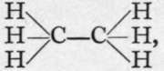
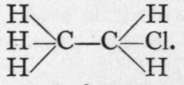

Ammonium And Phosphonium Halides
Description
This section is from the book "Modern Chemistry", by William Ramsay. Also available from Amazon: Modern Chemistry: Theoretical and Modern Chemistry (Volume 2).
Ammonium And Phosphonium Halides
These halides, which are formed by direct addition of the hydrogen halide to ammonia or to phosphine, closely resemble in colour, in crystalline form (cubic), and in reactions, the halides of the lithium group of metals. On mixing a solution of ammonia and hydrochloric acid, for example, the combination occurs: NH3.Aq + HCl.Aq = NH4Cl.Aq; and on evaporating the solution to dryness, ammonium chloride is left in an anhydrous state. From the conductivity of ammonia solution, it is known to contain a certain amount of NH.OH in an ionised condition ; and the equation may be written: NH4|-OH.Aq + H|-Cl.Aq = NH4|-Cl.Aq + H2O. As the hydroxyl ion is removed from the solution by the formation of practically non-ionised water, more and more ammonium hydroxide is formed to maintain equilibrium between the NH3.Aq and the NH4OH.Aq ; and the whole is ultimately transformed. The rate of transformation, however, is a very rapid one. Combination has been shown not to take place between perfectly dry ammonia and dry hydrogen chloride ; hence it does not seem unlikely that ionisation may occur, either in the gaseous state, or more probably on the surface of the vessel in the condensed layer of moisture which appears always to adhere to all solid surfaces. Once started, combination occurs continuously until the reaction is complete. Ordinarily "dry" ammonia, however, at once gives a dense cloud with hydrogen chloride, bromide, or iodide. Again, perfectly dry ammonium chloride has the vapour-density 26.25, corresponding to the molecular weight (N=I4 + H4 = 4 + C1= 35.5) = 53.5; whereas, if moist, the density is half that amount, corresponding with a mixture of NH3 =17 and HC1 = 36.5. These compounds have densities of 8.5 and 18.25 respectively, and a mixture in equal proportions of each has a density the mean of the two, viz., 13.125. It appears necessary that ionisation into NH4 and -CI should take place before dissociation into NH3 and HC1 is possible. The electrically neutral body NH4C1 can volatilise unchanged ; the ions NH4 and -CI are incapable of volatilisation as such, and in volatilising the electron is transferred, with formation of the two electrically neutral compounds HC1 and NH3.
Phosphine, PH3, also unites with hydrogen chloride, but only under high pressure, at the ordinary temperature. On the other hand, phosphonium iodide, PH4I, is produced by the union of phosphine with hydrogen iodide under atmospheric pressure ; it forms white, cubical crystals, which, like ammonium chloride, dissociate when heated. The hydrides of arsenic and antimony form no such compounds.
It must be assumed that these compounds are formed with change of valency of the nitrogen or phoiphorus ; the triad becomes pentad ; the NinH3 becomes H4NVCJ. On distilling with sodium hydroxide or slaked lime, water is formed, and the element is reduced to its original triad condition, thus: NH4|-Cl.Aq + Na|-OH.Aq = NH4|-OH.Aq + NaJ-Cl.Aq and NH4|-OH.Aq = NH3 + H2O.Aq, two electrically neutral bodies.
Carbon shows no such tendency to change valency. The hydrocarbons of the methane series are " saturated/' i.e. they have no tendency to take up any other element. Hence halogen must replace hydrogen. This can be done either directly, by the action of the halogen on the hydrocarbon, as, for instance, CH4 + Cl2 = CH3C1 + HC1 ; or indirectly, by the action of the halogen acid on the hydroxide : CH3OH + HC1 = CH3C1 + H2O. Such hydroxides are termed alcohols; that derived from ethane, C2H6, is the ordinary anhydrous alcohol of commerce ; its formula is C2H5OH, and the corresponding chloride of ethyl is C2H5C1. It will be remembered that the structural formula of ethane is  and that of ethyl chloride is There is, however, a difference between the formation of ethyl chloride, for example, and of sodium chloride. Whereas sodium chloride is ionised in solution in water, ethyl chloride is insoluble, and is therefore non-ionised. Hence the action is a slow one ; the alcohol is saturated with hydrogen chloride, allowed to stand for some hours, and distilled; ethyl chloride, being volatile, passes over; it is a gas, condensing at about 12° to a mobile colourless liquid. It is probable that the hydrogen chloride is ionised in solution in alcohol; the alcohol is also possibly ionised to a minute extent; water is formed by the union of the hydrogen and hydroxyl ions, and non-ionised ethyl chloride distils over : (C2H5)|-OH + H|-C1.Ale = H2O + C2H5C1. But this suggestion, it must be admitted, is somewhat speculative, and is based only on analogy with reactions of a more familiar nature.
The formation of some of the halogen compounds of the olefines, and of hydrocarbons of the acetylene and benzene series, has already been alluded to on p. 48.
Continue to:
- prev: Colour Of Ions
- Table of Contents
- next: Chapter IV. Hydroxides And Acids-"Insoluble Substances"- Indicators